遊びで植物を育てよう
2022/08/11
ハナカイドウが枯れました。
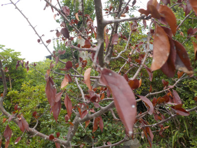
根元を何かの幼虫に食べられてしまい枯れました。
木も自然のものだし。虫も自然のものなので仕方のないことです。想定内です。
でもショックだな。
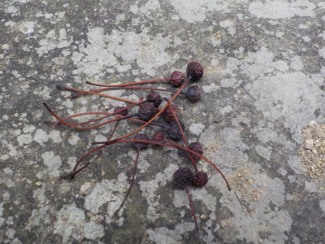
実を取りましたが、たぶん熟れていないんだろうな。
ひょっとしたら芽が出るかもしれないので。期待を込めて蒔きました。
【ハナカイドウTOP】 【木TOP】 【園芸TOP】
2022/07/02
ハナカイドウに実が付いています。
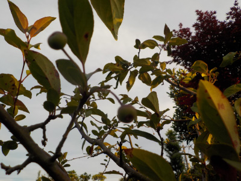
丸い小さな実が出来ました。
種を採って種蒔きしたいと思っていますが、収獲出来るかな？
実が熟れるのが10月とか11月らしいです。鳥に食べられたり強風で落下したりしないといいんですけど。
【ハナカイドウTOP】 【木TOP】 【園芸TOP】
2022/04/24
ハナカイドウの挿し木で花が咲いてました。
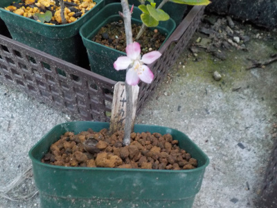
花は咲いていますが、この枝に根っこはありません。
去年も根っこ無しで葉っぱが出ましたが、それと同じで花が咲いたんだと思います。
【ハナカイドウTOP】 【木TOP】 【園芸TOP】
2022/04/09
ハナカイドウは綺麗だ。
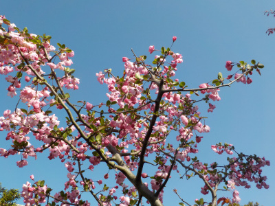
ハナカイドウは毎年挿し木を失敗しているので、今年はもう止めようと思っていました。
でも花を見たら、今年も挿し木してみよう！って気になりました。
【ハナカイドウTOP】 【木TOP】 【園芸TOP】
2021/07/03
ハナカイドウの挿し木が微妙に成長しています。
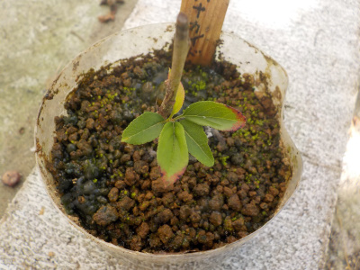
葉っぱが増えて5枚になりました。
葉色が暗いので、若葉って感じがしません。
【ハナカイドウTOP】 【木TOP】 【園芸TOP】
2021/05/29
ハナカイドウの挿し木をしました。
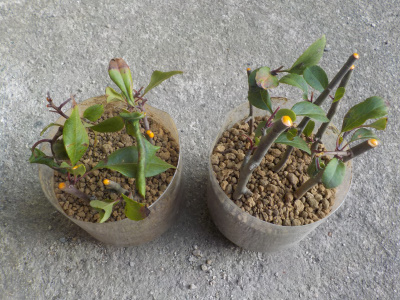
今年の挿し木はどうなるかな。
【ハナカイドウTOP】 【木TOP】 【園芸TOP】
2021/05/15
1年前に挿木したハナカイドウから芽が出ました。
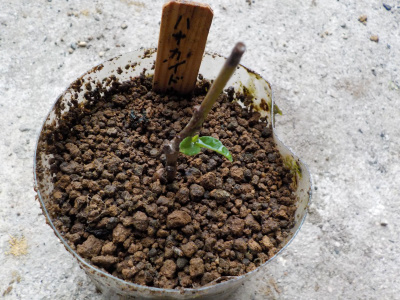
去年の4月に挿木したハナカイドウから芽が出ました。
挿木に成功したんだと思い植替えしようとしたんですが、根っこがありませんでした。
枝に残っている栄養だけで発芽したみたいです。
植物の生命力って凄いです。
この先、この挿し木はどうなるんでしょうね。
今生きてるってことは今後も生きそうだし、1年経っても根が出なかったってことは今後も根が出ない可能性があります。
【ハナカイドウTOP】 【木TOP】 【園芸TOP】
2021/03/28
今年はハナカイドウの開花が早かったです。
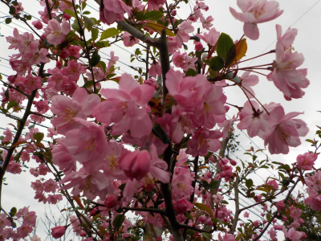
桜も早かったですが、他の花も今年は早いですね。
早いからって別にいいことも悪いこともないですけど。
3月末ってまだ寒かったり忙しかったりするので、桜もそうですが4月に咲いた方がいいかなー。
【ハナカイドウTOP】 【木TOP】 【園芸TOP】
2020/07/12
ハナカイドウの水差しをします。
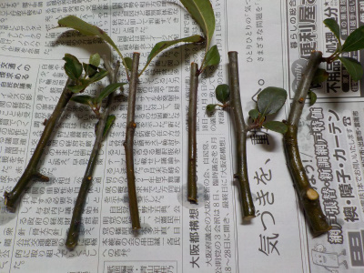
剪定した枝を使って水差しをします。
どうなるか分からないですけど、水差しって鉢とか土を用意しなくていいので楽ですよね。
【ハナカイドウTOP】 【木TOP】 【園芸TOP】
2020/06/07
挿し木のハナカイドウにまだ葉っぱがありました。

1月以上経っているので成功するかも？
ちょっと期待がもてますね。
【ハナカイドウTOP】 【木TOP】 【園芸TOP】
2020/04/25
ハナカイドウの挿し木をしました。
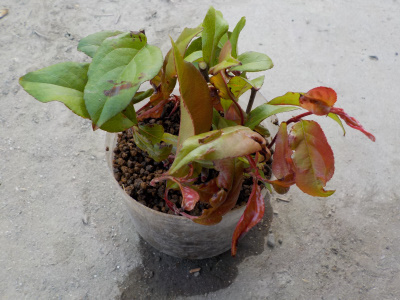
成功率が低いようですが挿し木しました。
ペットボトルの密閉挿しです。
【ハナカイドウTOP】 【木TOP】 【園芸TOP】
2020/04/05
ハナカイドウが咲きました。
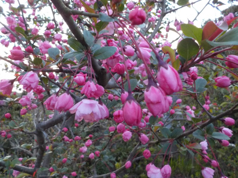
綺麗ですね。
花が終わったら挿し木をしようと思っています。
種子も蒔いてみたいな。
【ハナカイドウTOP】
【木TOP】
【園芸TOP】
畑仕事じゃないよ。
【おいしいものを食べよう。】【たくさん寝よう。】
【ソロ活をしよう!】【季節感のあることをしよう。】【動画視聴はほどほどに。】【当サイトの全てのコンテンツは無断転載禁止です。】